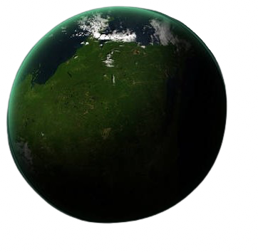

Granvalis Prime
Classification: Agri-world
Population: ~80,000,000
Summary
Granvalis Prime is named after its main product: wheat. This product is essential for supporting the current imperial campaign and sustaining existing hive worlds, both of which are partly fed by exports from Granvalis Prime.
Important Locations
There are a few essential locations on Granvalis Prime. As an agri-world, most of the planet's surface is farmland, with sparse human laborers and many servitors to do the work. There are primarily two known locations that hold a reasonable human populace. One is the planetary governor's manor, where he, along with many others, coordinates the export of the harvest. The Administratum also maintains a location here. The second is the City Ventoria, where the wheat is exported off-planet. A few Imperial factions hold at least some power here, including the Mechanicus, the Ministorum, and a few more that help maintain the spiritual beliefs of the people, the machinery of the agri-world, or perform a great many other duties these Imperial factions may have.
